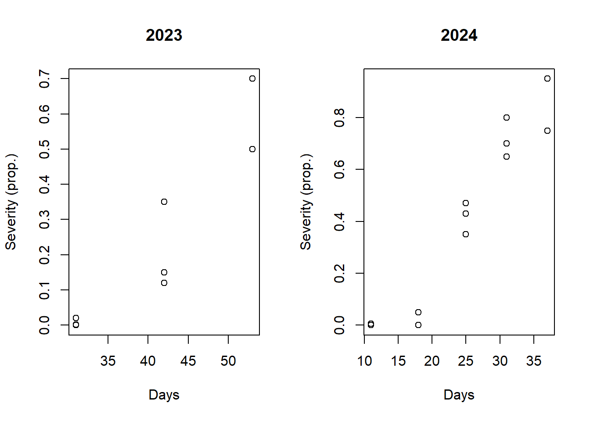
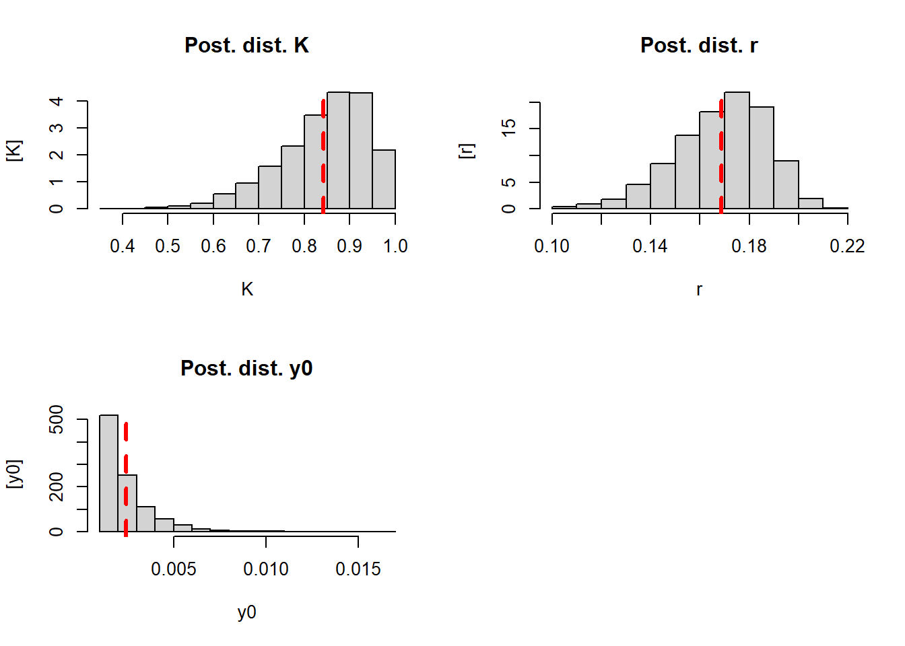
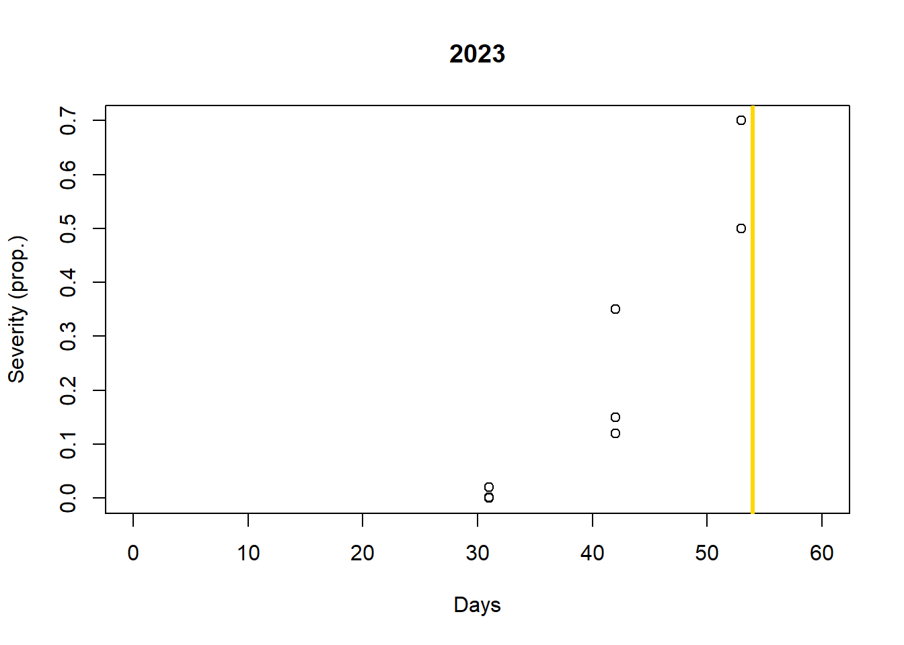
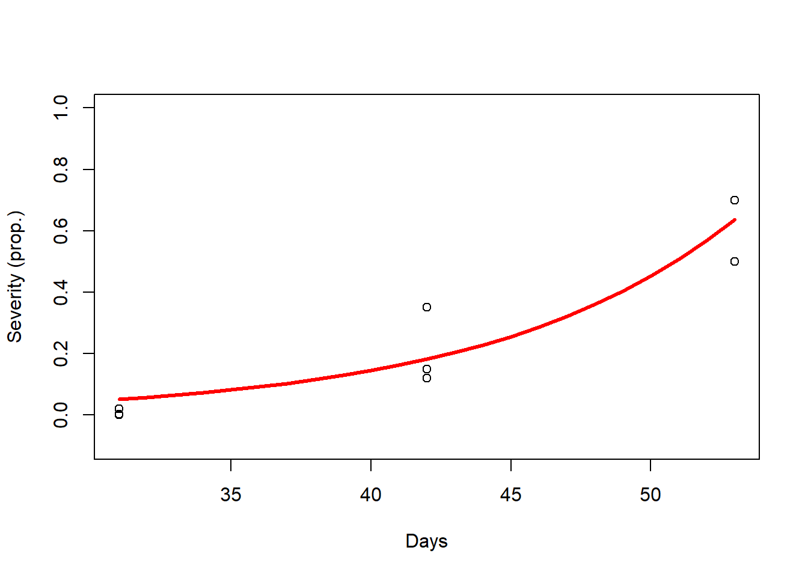
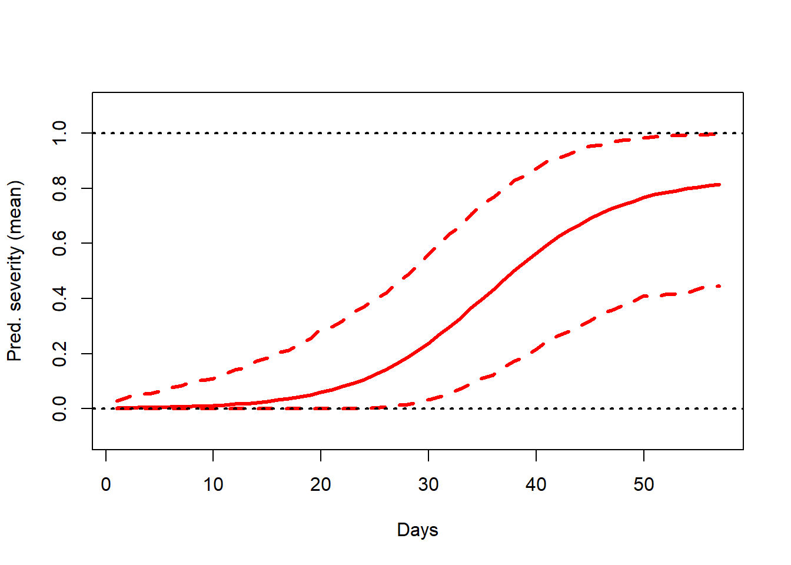

Welcome to Day 2!!
Yesterday we:
Discussed what is a linear model and what is not - Linear on the parameters.
We showed that linear models \(\neq\) lines.
We showed that linear models \(\neq\) simplicity.
Recall how to differentiate linear from nonlinear models:
All unknown parameter only multiplies known quantities
All parameters are added together
All parameters are outside nonlinear functions.
Discussed different estimation approaches.
Loss function approach - Minimize the residual sum (distance between obs and pred.).
Likelihood-based approach - Maximize likelihood = Values of parameters that maximize the probability of the observed data under the model we assumed.
Bayesian approach - Prior knowledge + data = Values the parameter can assume with different probability - Whole distribution (posterior distribution).
Two common questions from yesterday:
About \(\hat{\theta}\)
How to define priors (flax vs informative) - Day 3
Recall that complexity increases, especially because we have space for more assumptions. Assumptions help with addressing “problems”.
Discussed briefly when they are equal and when they are not (similar assumptions across methods).
Nonlinear models
Outline:
Section 3: Exercises from day 1
Linearization - Pros and cons
Mechanistic vs Phenomenological models
Identifiability of parameters
Section 4: Working with non-identifiability
- Fixing weakly identifiable parameters
Extra: Summary
Questions
Recommended - Base for Day 3
Optional - For practice only!
What we expect you to learn on Day 2:
Linearization is useful and common, but it is heavy in assumptions that might not fit your research question.
Nonlinear models are useful, but sometimes linear models can fit perfectly depending on your research question/goals.
Identifiability is a big thing when using nonlinear models, we need to know what it is and pay attention on how to remedy it.
There is no free lunch, every method has assumptions, and assumptions can be expensive!
Section 3: Exercises from day 1
You were asked to work with this data:

What is it really about?

Two years/seasons: 2023 (less disease) and 2024 (more disease)
Two varieties:
a -> Susceptible
b -> Moderately resistant
Linearized logistic model for 2024, variety a
Code
# Data 2024 variety a
a_24 <- df_a[which(df_a$year == 2024),]
a_24$p_sev <- a_24$p_sev + 0.001
# Logit transformation
a_24$l_sev <- log(a_24$p_sev/(1-a_24$p_sev)) # Logit
# Fit the model
m1 <- lm(l_sev ~ time, data = a_24)
# Make predictions
m1_pred <- data.frame(
time = seq(min(a_24$time), max(a_24$time), by = 1)
)
m1_pred$pred <- predict(m1, newdata = m1_pred)
# Plot predictions
m1_pred$inv_logit <- 1/(1+exp(-m1_pred$pred))
plot(a_24$time, a_24$l_sev, ylab = "Logit(y)", xlab = "Days", ylim = c(-7, 5))
lines(m1_pred$time, m1_pred$pred, lwd = 3, col = "red")
Code

What is actually going on here?
Logit:
\[ logit(y) = log(\frac{y}{K-y}) \]
We have to assume a value for \(K\), “removing” this parameter.
Our intercept (\(\beta_0\)) it not as simple as before:
\[ \beta_0 = log(\frac{y_0}{K-y_0}) \]
We also “remove” \(y_0\).
We still have our slope \(\beta_1\), and we can use it to make inference about the disease growth, but it is not the same as \(r\).
Overall:
\(\beta_1\) describes the change in \(\mathbf{y}\) with one unit change in \(\mathbf{x}\)
\(r\) describes how quickly the epidemic accelerates and approaches its upper bound
If you want more details:
\(\beta_1\):
Multiply \(x_i\) and is additive, each unit change in \(\mathbf{x}\) adds \(\beta_1\) to \(\mathbf{y}\).
Shifts the mean linearly.
Effect is independent on \(\mathbf{y}\) value. No bounds.
No direct biological meaning.
Easier to estimate with low correlation to \(\beta_0\).
\(r\)
Multiply \(x_i\), but is on an exponential, each unit change in \(\mathbf{x}\) is multiplicative in the growth (differential equation5).
Affects shape and trajectory of the entire curve.
Effect changes with \(\mathbf{y}\) value. Bounded between 0 and \(K\)
Direct biological meaning.
Estimation sensitive to information on the data, often correlated with \(K\).
The actual linearized model:
\[ log(\frac{y_i}{1 - y_i}) = log(\frac{y_0}{1 - y_0}) + \beta_1*x_i + \varepsilon_i \]
Pros: Simple to use; require less information from the data collected to fit.
Cons: No inference on important parameters such as \(K\) and \(y_0\); more complex to make sense of the response variable \(logit(severity)\); sensibility to extreme values (close to 0 or 100); \(\beta_1\) and \(r\) do not have the same meaning (\(\beta_1*x_i\) adds, while \(r*x_i\) is exponential); change the error structure (additive to multiplicative).
Inverse of the logit transformation:
\[ \frac{1}{1-e^{-x}} \]
Our inverse transformed model looks like this:
\[ y_i^{inv} = \frac{1}{1+(\frac{1-y_0}{y_0})e^{-\beta_1x_i\varepsilon_i}} \]
Mechanistic vs Phenomenological models - Logistic and polynomial models for 2024 variety a
Code
Code
Code
par(mfrow = c(1, 2))
# Plot predictions for logistic
plot(a_24$time, a_24$p_sev, ylab = "Severity (prop.)", xlab = "Days", ylim = c(-0.1, 1), main = "Logistic")
lines(m2_pred$time, m2_pred$pred, lwd = 3, col = "red")
# Plot predictions for polynomial
plot(a_24$time, a_24$p_sev, ylab = "Severity (prop.)", xlab = "Days", ylim = c(-0.1, 1), main = "Polynomial")
lines(m3_pred$time, m3_pred$pred, lwd = 3, col = "red")
What is the difference? Why would we choose one or the other? What is the disease rate of growth?
Mechanistic:
Represent underlying processes - Parameters
Parameters with biological meaning - Inference
Can be very useful for extrapolation (prediction outside observed region) - Parameter natural biological constrain (not always)
Phenomenological:
Represent pattern observed in the data, the phenomena itself
Does not explicitly model underlying processes (we can have an idea - slope)
Pattern exploration
Very good for interpolation (prediction inside observed region), can also be good for extrapolation, but with some considerations (highly adaptable to the observations)
Identifiability of parameters - Logistic model for variety a in 2023 and 2024
What is identifiability?
In general terms, when a parameter is weakly constrained ~ We are very uncertain about that parameter
Two types:
Structural: This is caused by the model structure
Practical: Caused by the data - Limited data lack information on a specific parameter
Board
What it is - Example
Why is it very important in nonlinear models
To understand what is causes, look at the parameters of our model for both years with Wald confidence intervals6:
- High uncertainty around parameter estimates! - Classical symptom of weak identifiability

Another classical symptom is correlation between parameters. How does it look like for our models?
- 2023 correlation matrix
## K y0 r
## K 1.0000000 0.9761482 -0.9771736
## y0 0.9761482 1.0000000 -0.9999097
## r -0.9771736 -0.9999097 1.0000000- 2024 correlation matrix
## K y0 r
## K 1.0000000 0.6486111 -0.6869020
## y0 0.6486111 1.0000000 -0.9946642
## r -0.6869020 -0.9946642 1.0000000Why it happens?
The data inform combinations of parameters instead of individual parameters
It created dependencies - Dependencies between \(r\) and \(K\) in 2023 and between \(r\) and \(y_0\) in 2024.
Highlight from Section 3:
Linearization is an option, but it is heavy in underlying assumptions and works on a transformed scale.
Depending on your goal (capture the pattern [phenomenological route] or parameter inference [mechanistic route]), more complex linear models might be enough, and you not necessarily require a nonlinear model.
Weak identifiability, in general terms, happens when your data has low information about an specific parameters.
Weak identifiability is an important and recurrent topic in nonlinear models, and you can remedy (but note “resolve”) it with different strategies. These strategies require more assumptions.
Assumptions introduce bias, bias reduce variance, this is why assumptions need to be deeply considered, they should not be lightly taken.
Section 4: Working with weakly identifiable parameters
What are our options?
Adjust the experimental design and/or data collection method
Collect more data associated with the weakly identified parameters
Reparametrize weakly identified parameters
- Simplify the model (e.g. fixing weakly identified parameters)
- Linearization also simplifies the model, and \(\beta_1\) is rarely weakly identifiable
Impose constrains on these parameters using prior knowledge
A good paper about identifiability: Preston et al. 2025
Fixing weakly identifiable parameters - Variety a in 2023
Recall 2023 disease data for progress in time:

If we are very interested only on how fast the disease is growing over time (\(r\)), we can fixate other parameters, to try to reduce uncertainty on it. Let’s assume \(K = 1\):
\[ y_i = \frac{1}{1+(\frac{1 - y_0}{y_0})*e^{-rx_i}} + \varepsilon_i \]
Code
# Data variety a, 2023
a_23 <- df[which(df$var == "a" & df$year == 2023),]
# Fit the model
m4 <- nls(p_sev ~ 100/(1 + ((100-y0)/y0)*exp(-r*time)), data = a_23, start = list(y0 = 0.001, r = 0.2))
# Make predictions
m4_pred <- data.frame(
time = seq(min(a_23$time), max(a_23$time))
)
m4_pred$pred <- predict(m4, newdata = m4_pred)
# Plot predictions
plot(a_23$time, a_23$p_sev, ylab = "Severity (prop.)", xlab = "Days", ylim = c(-0.1, 1))
lines(m4_pred$time, m4_pred$pred, lwd = 3, col = 'red')
How it compares to estimating \(K\)?

How about the parameters?

Let’s look at the estimated parameter values and correlation matrix
For \(K = 1\)
## y0 r
## 0.0015 0.1145## y0 r
## y0 1.0000000 -0.9979509
## r -0.9979509 1.0000000For \(K\) estimated
## K y0 r
## 0.6684 0.0000 0.3361## K y0 r
## K 1.0000000 0.9761482 -0.9771736
## y0 0.9761482 1.0000000 -0.9999097
## r -0.9771736 -0.9999097 1.0000000Consider that:
We lose any inference on \(K\)
We cannot predict how uncertainty will be spread around other parameters
We are saying \(K\) is 100% when it actually might not be!
We underestimate \(r\) (why?)
Highlight from Section 4:
Some assumptions are very strong, such as \(K = 1\), but depending on your research question, they might make sense.
All assumptions have a cost. If the cost is worth it, it depends on your objectives with the analysis.
Extra: Summary
Today we discussed:
Linearization
Mechanistic vs Phenomenological models
Identifiability
What it is
How to work with it - Fixing parameters and simplification
Which models did we use in this day?
- Logistic Disease Progress Curve (nonlinear, mechanistic):
\[ y_i = \frac{K}{1 + (\frac{K - y_0}{y_0})e^{-r*x_i}}+ \varepsilon_i \]
- Logit-transformed linear model (linear, phenomenological):
\[ log(\frac{y_i}{1 - y_i}) = log(\frac{y_0}{1 - y_0}) + \beta_1*x_i + \varepsilon_i \]
Which assumption we made?
- For all models:
\[ \varepsilon_i \sim i.i.d. N(0, \sigma^2) \]
- For the linearized and simplified we also did:
\[ K = 1 \]
*Note on nls function in R: It uses Least Squares, a loss function approach, however, it does make the assumption \(\varepsilon_i \sim i.i.d.N(0, \sigma^2)\), which gives us inference.
- Under this assumption [that errors are normal, independent, and individually distributed]: Likelihood approach = Loss function approach. We have seen that in Day 1!
Questions
- Sample code is provided for some questions. Code used on the class examples can also be used to work on this practice.
Recommended - Base for day 3
For 2023, fit the nonlinear logistic model to variety a and b. Extract \(K\) and \(r\) and check how genetic resistance affect these parameters.
Code
# Let's fit the model for each variety individually
# Data
a_23 <- df[which(df$year == 2023 & df$var == "a"),]
b_23 <- df[which(df$year == 2023 & df$var == "b"),]
# Fit the models
ma <- nls(p_sev ~ K/(1+((K-y0)/y0)*exp(-r*time)), data = a_23, start = c(K = 0.7, y0 = 0.0001, r = 0.2))
mb <- nls(p_sev ~ K/(1+((K-y0)/y0)*exp(-r*time)), data = b_23, start = c(K = 0.7, y0 = 0.0001, r = 0.2))
# Make predictions
pred_df <- data.frame(
time = seq(min(a_23$time), max(a_23$time))
)
pred_df$pred_a <- predict(ma, newdata = pred_df)
pred_df$pred_b <- predict(mb, newdata = pred_df)
# Plot predictions
plot(a_23$time, a_23$p_sev, type = "p", col = "darkred", ylim = c(0, 1), ylab = "Severity (prop.)", xlab = "Days")
points(b_23$time, b_23$p_sev, col = "orange")
lines(pred_df$time, pred_df$pred_a, lwd = 3, col = 'red')
lines(pred_df$time, pred_df$pred_b, lwd = 3, col = 'gold')
# Extract parameters
## K
K_a <- coef(ma)[1]
K_a
K_b <- coef(mb)[1]
K_b
## r
r_a <- coef(ma)[3]
r_a
r_b <- coef(mb)[3]
r_bRepeat the previous question, but now, for 2024.
Optional - For practice only!
Write down the model you are using on the first question and which assumption you are making.
Repeat what you did in the first question, but assume \(K = 1\). Can you see differences?
Code
# Let's fit the model for each variety individually
# Data
a_23 <- df[which(df$year == 2023 & df$var == "a"),]
b_23 <- df[which(df$year == 2023 & df$var == "b"),]
# Fit the models
ma <- nls(p_sev ~ 1/(1+((1-y0)/y0)*exp(-r*time)), data = a_23, start = c(y0 = 0.0001, r = 0.2))
mb <- nls(p_sev ~ 1/(1+((1-y0)/y0)*exp(-r*time)), data = b_23, start = c(y0 = 0.0001, r = 0.2))
# Make predictions
pred_df <- data.frame(
time = seq(min(a_23$time), max(a_23$time))
)
pred_df$pred_a <- predict(ma, newdata = pred_df)
pred_df$pred_b <- predict(mb, newdata = pred_df)
# Plot predictions
plot(a_23$time, a_23$p_sev, type = "p", col = "darkred", ylim = c(0, 1), ylab = "Severity (prop.)", xlab = "Days")
points(b_23$time, b_23$p_sev, col = "orange")
lines(pred_df$time, pred_df$pred_a, lwd = 3, col = 'red')
lines(pred_df$time, pred_df$pred_b, lwd = 3, col = 'gold')
# Extract parameters
## r
r_a <- coef(ma)[2]
r_a
r_b <- coef(mb)[2]
r_bUse the logit transformation on the data and fit a linear model. Compare the disease progress in varieties a and b.
Code
# Data
a_23 <- df[which(df$year == 2023 & df$var == "a"),]
a_23$p_sev <- a_23$p_sev + 0.001
a_23$l_sev <- log(a_23$p_sev/(1-a_23$p_sev))
b_23 <- df[which(df$year == 2023 & df$var == "b"),]
b_23$p_sev <- b_23$p_sev + 0.001
b_23$l_sev <- log(b_23$p_sev/(1-b_23$p_sev))
# Fit the models
ma <- lm(l_sev ~ time, data = a_23)
mb <- lm(l_sev ~ time, data = b_23)
# Make predictions
pred_df <- data.frame(
time = seq(min(a_23$time), max(a_23$time))
)
pred_df$pred_a <- predict(ma, newdata = pred_df)
pred_df$pred_b <- predict(mb, newdata = pred_df)
# Plot predictions
plot(a_23$time, a_23$l_sev, type = "p", col = "darkred", ylab = "Logit(y)", xlab = "Days")
points(b_23$time, b_23$l_sev, col = "orange")
lines(pred_df$time, pred_df$pred_a, lwd = 3, col = 'red')
lines(pred_df$time, pred_df$pred_b, lwd = 3, col = 'gold')
# Extract parameters
## b1
b1_a <- coef(ma)[2]
b1_a
b1_b <- coef(mb)[2]
b1_bWrite down the model you are using in the previous questions and which assumptions are you making.
\(\frac{dy}{dt} = \mathbf{ry}(1-\frac{\mathbf{y}}{\mathbf{K}})\)↩︎
Wald CI measure local uncertainty (around the parameter estimate) and not at the whole parameter space (all values it could assume - global), therefore, they might be more optimistic than global CI. Bootstrap or Bayesian approach would provide more closely a global uncertainty measure once they explore a broader region of the parameter space.↩︎